Demo for Pete Magill
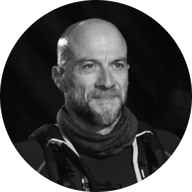
Founder, Ultra-endurance athlete
Ottavia is led by Elad Daniel, a tech entrepreneur and co-founder of Gefen Technologies, where he was responsible for the company's technology through its IPO. He brings deep experience in data-driven, enterprise platforms and a long-standing focus on endurance sports and human performance.
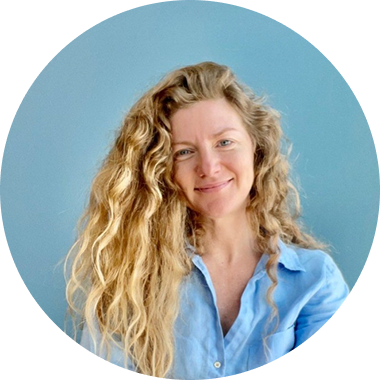
Co-Founder, Product & Design lead
Product and design are led by Vika Finkel, former Senior Product Design Leadership at Meta, where she owned and delivered major initiatives across Facebook, WhatsApp, Instagram, Messenger, and Novi. She brings experience building products from zero to launch, as well as evolving systems at massive scale, with responsibility spanning product vision, execution, and team building.
What is Ottavia
Ottavia is a proactive wellbeing system that integrates multi-domain data with human knowledge to deliver continuous, context-aware support for everyday wellbeing decisions.
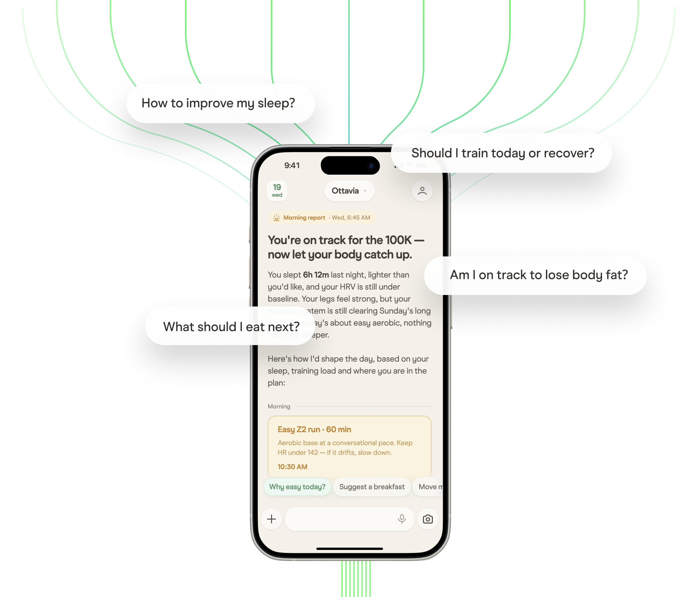
The Problem
Books, podcasts, social media, wearables, training plans, blood tests, and AI have made knowledge widely available. Yet the same questions remain:
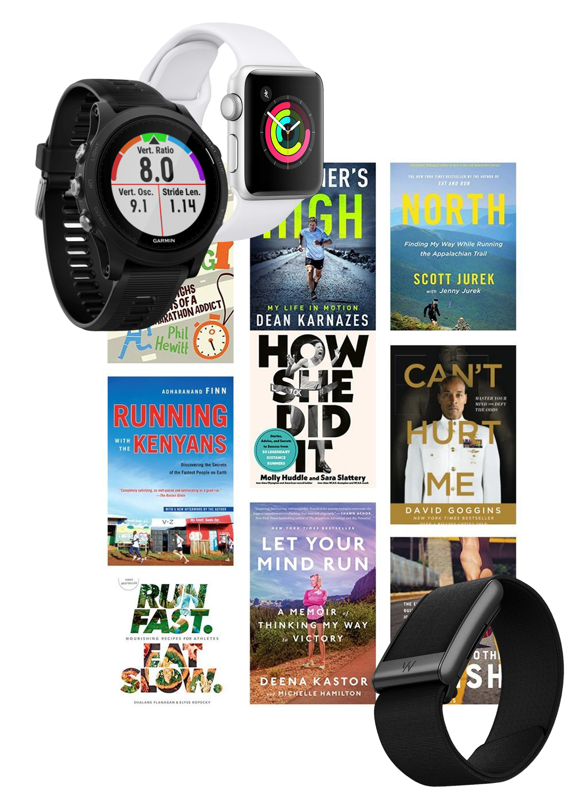
Who is it for
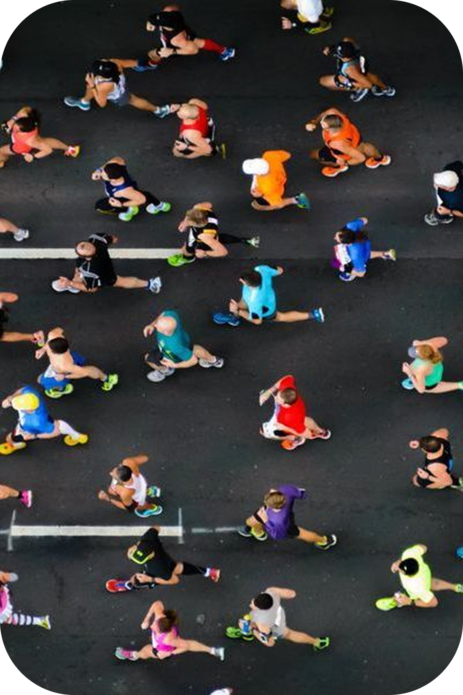
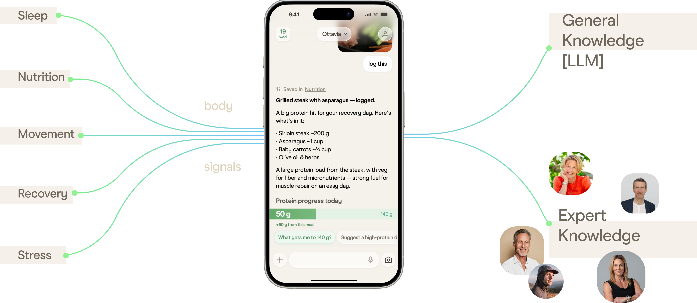
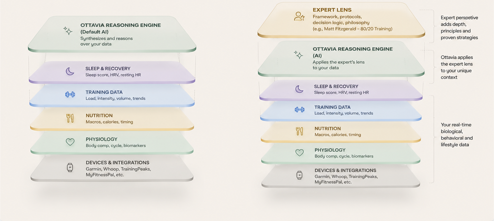
1 . Ottavia, the default. Reasons over user's data (sleep, training, nutrition, HRV, cycle, body comp) using its own knowledge.
2 . Ottavia + Experts, the same reasoning, deepened by an Expert you choose. The Expert provides the framework (their published work, protocols, decision logic). Ottavia applies it to your actual day. Same voice, deeper lens.
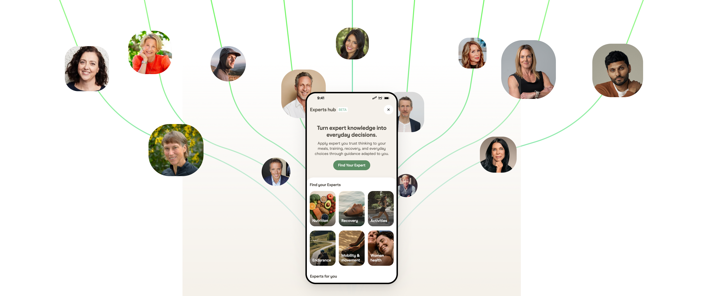
Images and references to experts are for demonstration purposes only. Featured individuals are not affiliated with Ottavia unless explicitly stated.
Safety and scope
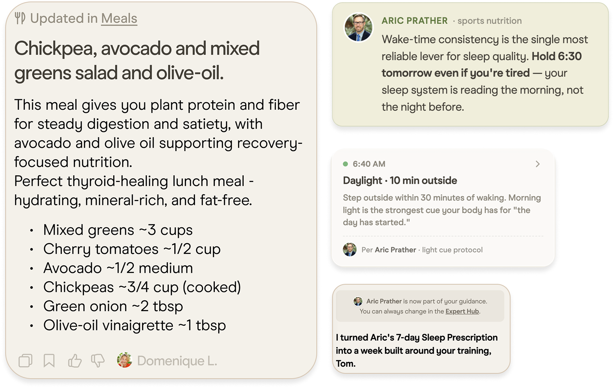
We are assembling a select group of leading experts to join us at the beginning of this journey. As a founding partner, you'll have early access to cutting-edge AI technology, a direct voice in product development, and the opportunity to establish your presence before the platform expands.
Capture your principles, frameworks, decision-making patterns, and examples worth modeling, then refine them over time. No weekly content to produce.
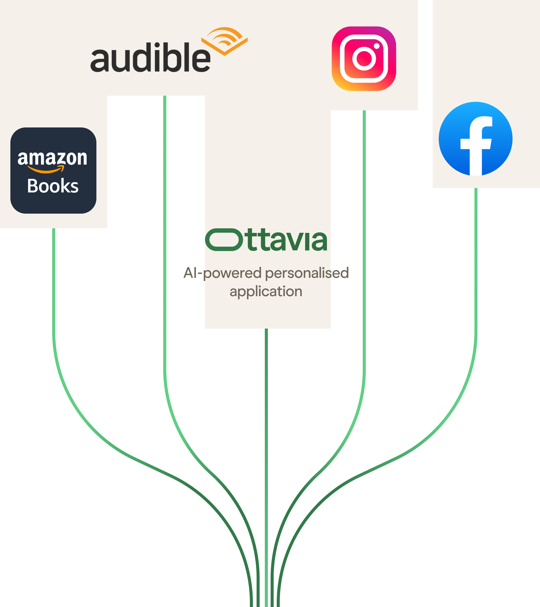
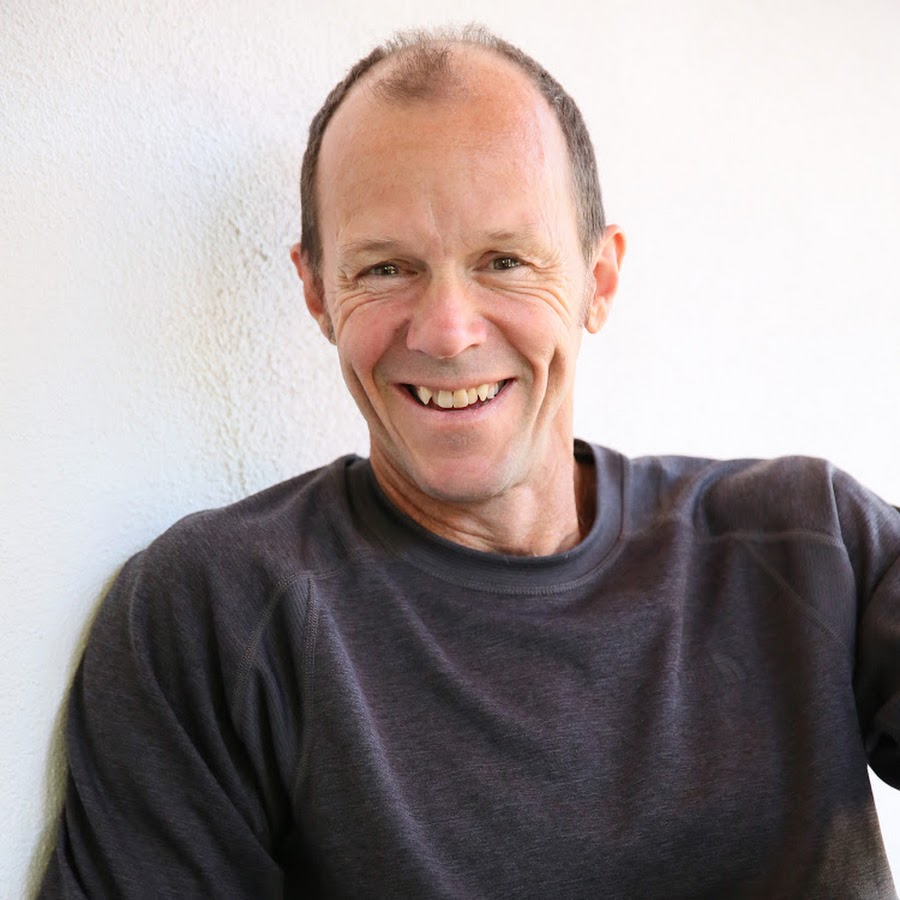
Next steps
See the vision and a working demo of your own methodology inside Ottavia.
A tailored walkthrough built around your work, with pricing and partnership details.
Your guidance goes live to real users, applied to their lives every day, at scale.